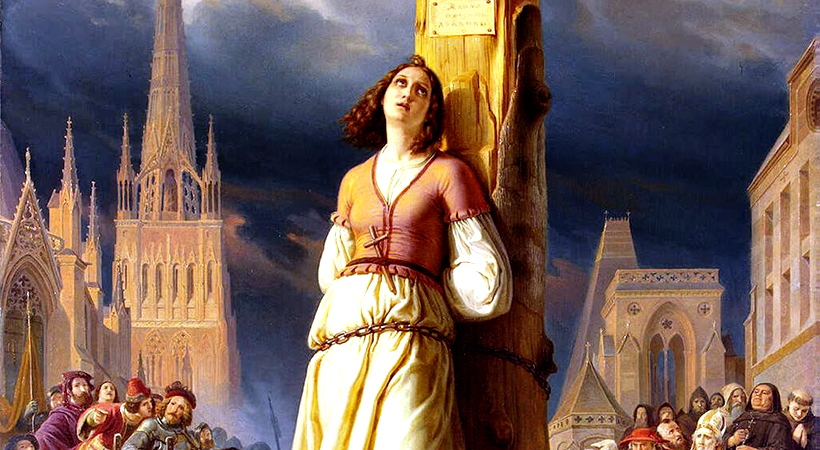
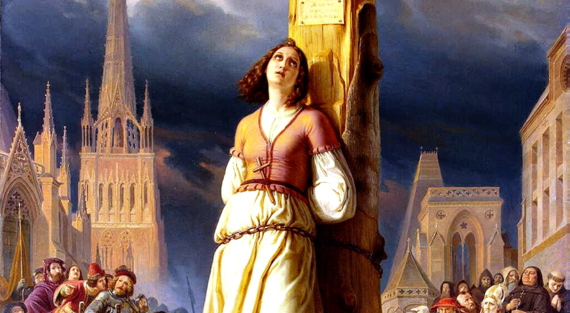
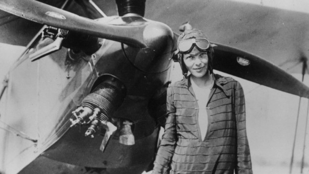
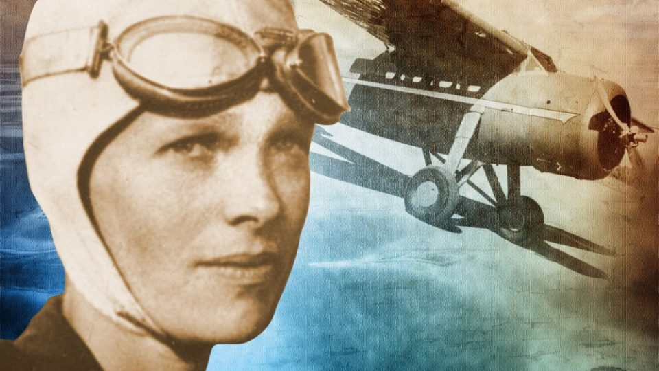
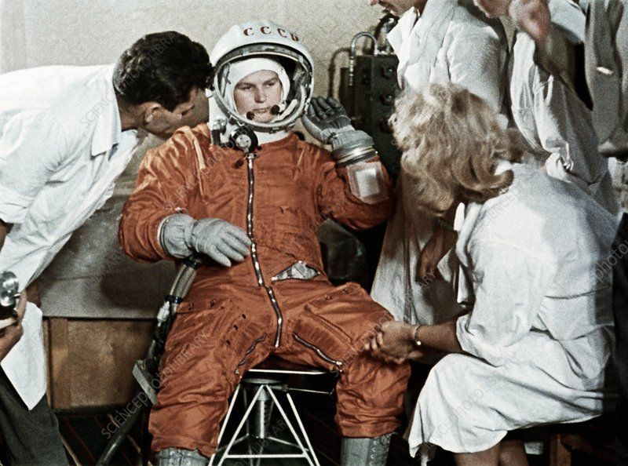
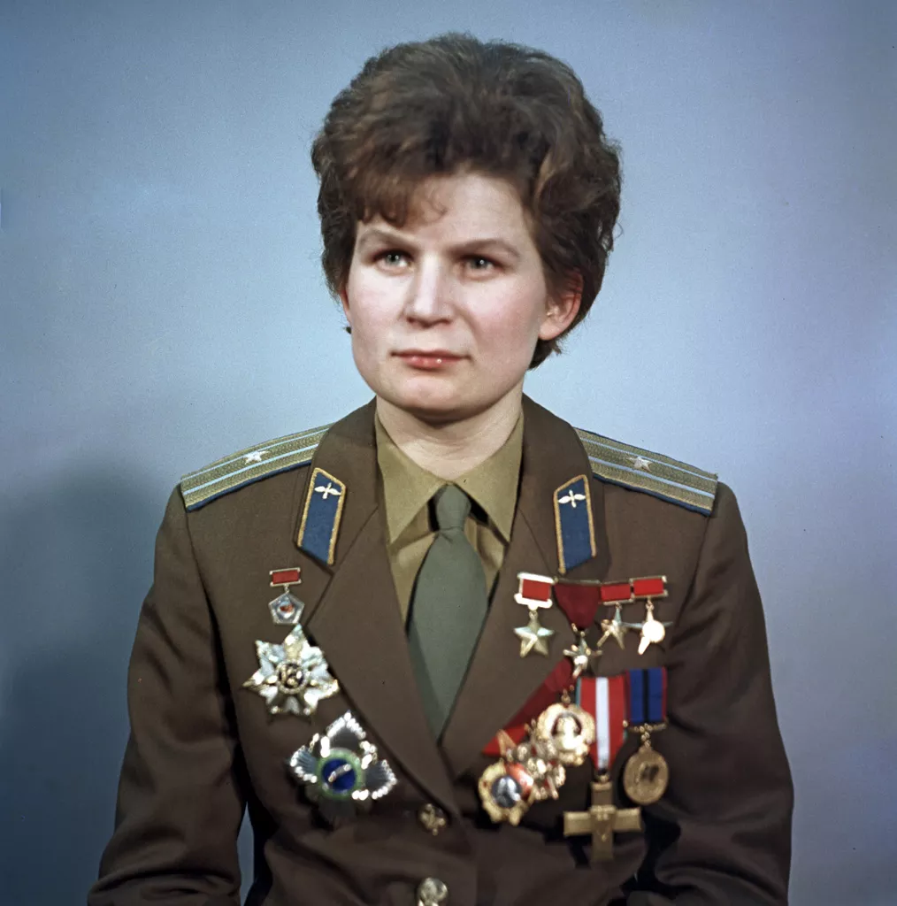

>VAMOS FALAR SOBRE MULHERES INSPIRADORAS<
Joana D'arc
De origem muito simples, a francesa Joana D'arc passou de camponesa analfabeta para chefe de um exército durante a Guerra dos 100 Anos, um feito e tanto para a sua curta vida. Uma das principais mártires da França, foi executada como uma herege em 1431 para, séculos mais tarde, ser canonizada pela Igreja Católica em 1920. Hoje é considerada uma santa.
 

Amelia Earhart
Um grande símbolo da aviação. Além de ter sido a primeira mulher a voar sozinha sobre o Oceano Atlântico, Amelia também foi a primeira a receber a Cruz de Voo Distinto, a condecoração militar atribuída a atos de heroísmo ou conquista extraordinária concedida a pilotos das Forças Aéreas dos EUA. A piloto desapareceu no Oceano Pacífico enquanto fazia um voo de volta ao mundo.
 Valentina Tereshkova
Não só a primeira mulher a ir ao espaço, como ainda hoje é a única que realizou um voo solo. A russa Valentina Tereshkova destacou-se dentre outras candidatas com mais estudos por ser uma exímia paraquedista, algo fundamental para o voo com a nave Vostok VI. Recebeu as duas maiores condecorações nacionais, a Ordem de Lenin e Herói da União Soviética. Anos depois ingressou na vida política do país.
 